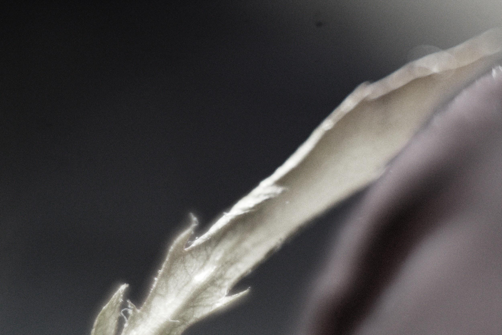
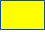
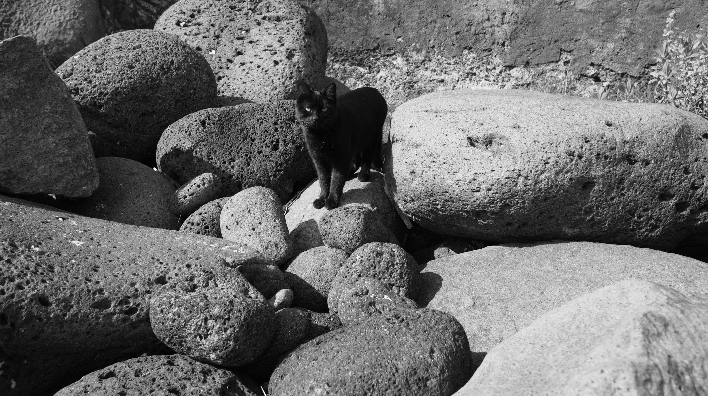
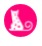
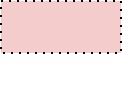
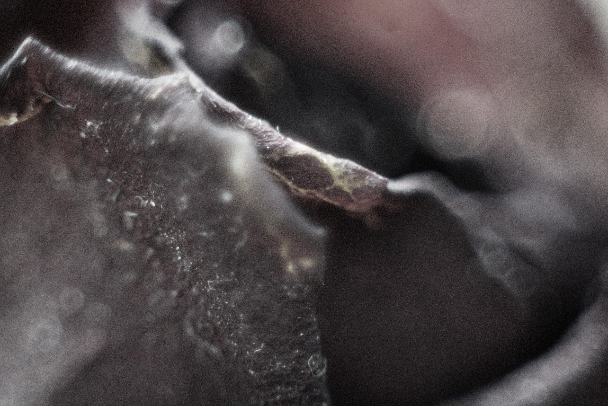
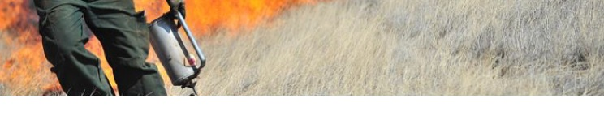

you are kindly invited to ʇᴉpǝ the memo of
FUET
fabulatory unit for emergency times

a campaign to re-open the z-files
modes of participation that are not mandatory or mutual exclusive but that work by anarchival traces left behind (and forward). non-linguistic participation.
mandatory one-kind-only exclusive participation belongs to the realm of the mutual exclusive politics
invisible action is action 
affectivism
neurodiverse modes of entrance (and exit) to emergency or mourning situations.
"we must become atmosphere's speculative scientists" (edward g. robinson)

“the political animal does not recognize any rigid opposition between the frivolous and the serious, which is to say, between the enthusiastic expenditure of creative energies and the anchor of function and utility. It nourishes itself on the productive paradox of their processual alliance. Nonnormative ethico-aesthetics resists, with bursts of supernormal propulsion, the leaden demands, so frequently heard, that one’s actions be “relevant” at all cost and that they “contribute to society” in a way that is already recognizable. The animal politics of education seriously needs to play on such demands.” 

jouer est la médecine
case: how to enter like a cat
brush up on the walls
zig zag across the path
brush along on people and things
intuit towards warm spots
Intuit towards foregrounded things
glide over things
purr with pleasant things
case: how to hang like a capybara
sit
